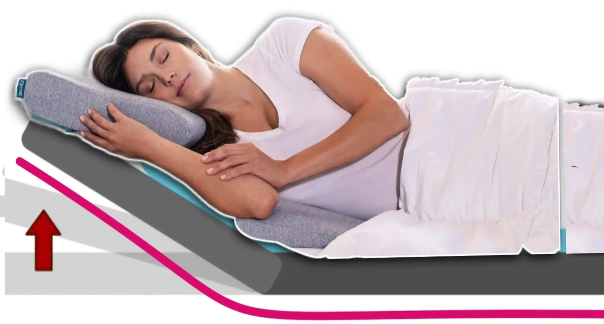
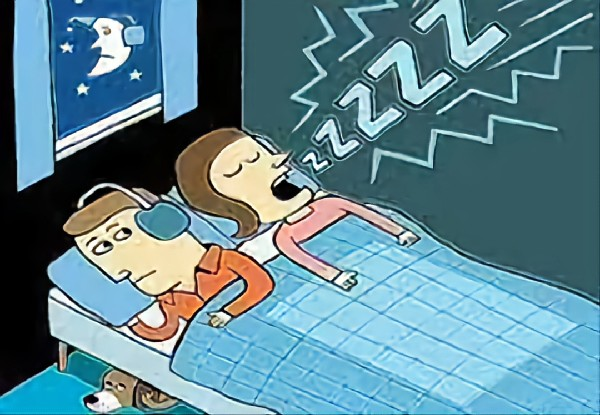

،،، الشخير مشكلة أكبر مما تتصور
! تعرَّف على الحلول الآن ،،،
✍ دكتور/ مختار الشرعبي

.
هل تشخر أنت أو شخص تحبه؟ لا تتجاهله! الشخير قد يكون جرس إنذار لمشاكل صحية.. إليك نصائح ذهبية للتغلب عليه:
أرقام صادمة عن الشخير
- 25% من البالغين يشخرون أحيانًا، و25% بشكل مزمن.
- الرجال أكثر عرضة من النساء (40% مقابل 24%).
🔍 لماذا نشخر؟ الأسباب ببساطة
- انسداد الأنف (حساسية، لحميات، أو انحراف الحاجز).
- الوزن الزائد: دهون الرقبة تضغط على مجرى الهواء.
- النوم على الظهر: يؤدي لتراجع اللسان والحلق.
- التدخين والكحول: يهيجان الحلق ويرخيان العضلات.
- التقدم في العمر: ضعف عضلات الحلق.
- مشاكل في اللوزتين أو سقف الحلق (خاصة عند الأطفال).
⚠️ ماذا لو استمر الشخير؟ مخاطر لا تُحتمل
- توقف التنفس أثناء النوم → يرفع خطر الجلطات وأمراض القلب.
- صداع الصباح + جفاف الحلق + نعاس النهار.
- اكتئاب وتوتر بسبب النوم المتقطع.
- مشاكل زوجية بسبب الإزعاج الليلي!
💡 حلول مضمونة (جربها الآن)
تغييرات بسيطة في الروتين:
- خسر 5-10% من وزنك → تقلل الشخير 50%!
- نم على جنبك (استخدم كرة تنس خلف ظهرك لمنع النوم على الظهر).
- ضع عدة وسائد تحت كتفيك ورأسك لترفعهما بمقدار 30 درجة عن باقي جسمك.

- أقلع عن التدخين والكحول قبل النوم بـ4 ساعات.
علاجات منزلية:
- بخاخات أنف لفتح المجرى التنفسي.
- تمارين تقوية الحلق: غنِّ يوميًا أو العب على آلة نفخ 20 دقيقة.
- بخاخات أنف للاحتقان.
أجهزة طبية:
- جهاز CPAP للحالات الشديدة.
- أجهزة الفم: تدفع الفك للأمام لفتح المجرى الهوائي.
✨ متى تحتاج جراحة؟
في حال كان هناك سبب واضح وبمنطقة واحدة ونسبة نجاح العملية مرتفعة.
جراحة الأنف: تحسّن التنفس بنسبة 60%
جراحة الحلق أو اللسان: نجاحها يصل لـ 80%
في الحالات الشديدة قد يكون عمل فتحة تنفسية مباشرة من الرقبة الى القصبة الهوائية هو الحل الأنسب.
دمج العلاجات: الجراحة + تغيير نمط الحياة = نتائج مذهلة!
📌 ملاحظة
إذا لاحظت: توقف تنفس، اختناق، أو شخير عالٍ جدًا → راجع الطبيب فورًا!